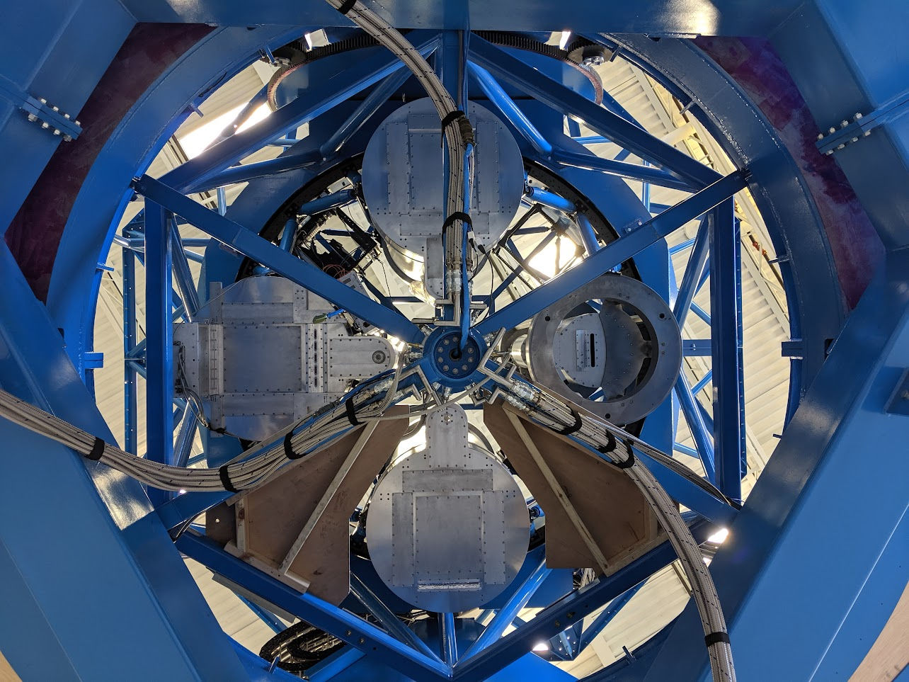

About Me

I'm Jamie, a Ph.D. candidate at the Minnesota Institute for Astrophysics. I'm an observational cosmologist interested in studying early-universe physics via measurements of the cosmic microwave background (CMB), with a particular interest in the intersection of data collection/quality and analysis. My work in graduate school has focused on the BICEP/Keck series of CMB polarization experiments, including commissioning and validating the performance of the new BICEP Array instrument and leading the 2019-2020 BICEP3/Keck Array B-mode analysis (as-yet unpublished). More information about my work can be found on my Research page. I completed my undergraduate studies at the University of Illinois at Urbana-Champaign in 2017, majoring in Physics and Astronomy with a concentration in computational physics. As an undergraduate, I worked on the SPT-3G camera for the South Pole Telescope.
When I'm not thinking about CMB polarization, I like to play the guitar, read, snuggle with my cat, and hone my amateur barista skills. I am originally from Nashville, Tennessee.
Research
, Dr. Matthew Petroff. Photo credit: Matthew Petroff")
My research focuses on observations of the cosmic microwave background (CMB), the 13.8 billion year-old afterglow of the Big Bang. Fluctuations in this afterglow contain a wealth of information about the early Universe, with much focus currently being directed towards the CMB's polarization. A characteristic parity-odd "B-mode" polarization imprint at ~degree angular scales is a generic prediction of a wide variety of cosmic inflationary models, being uniquely generated at the last scattering surface by primordial gravitational waves (PGW) generated by inflation. Searching for this B-mode polarization pattern then facilitates tight constraints on inflation's energy scale and its possible mechanisms.
")
I am a member of the BICEP/Keck Collaboration, who have published the most sensitive constraints to date on the amplitude of primordial gravitational waves: \(\sigma(r)=0.009\), yielding a constraint \(r_{0.05}<0.036\) (95% C.L.) (The BICEP/Keck Collaboration, Phys. Rev. Lett. 127, 151301 (2021)). This was achieved and continues to be furthered by fielding a series of small-aperture refracting telescopes at the geographic South Pole to accumulate data at multiple observing frequencies over many seasons of stable Polar winter conditions. The use of small-aperture refractors facilitates tight systematic error control and mitigation, and provides the flexibility to enable regular upgrades.

Building off of the success of the Keck Array, which deployed a multichroic array of BICEP2-class receivers, and of BICEP3, a single receiver with the instantaneous sensitivity of the entire Keck Array, the latest stage of the BICEP/Keck program is BICEP Array, an array of BICEP3-class receivers. A major effort at the University of Minnesota in 2018–2019 was the assembly and integration of the BICEP Array mount structure. I was deeply involved in this process, in particular helping to design the helium feed system to service the telescope receiver cryogenics and conducting much of the initial data quality assessments once receivers were installed (and, of course, turning many, many bolts). Below is a timelapse of ~1 year of mount construction, integration, and testing (warning: some flashing lights). More information can be found on the BICEP Array Mount Construction Blog.
I have deployed to Antarctica three times for a total of about 8 months (including transit), to help install BICEP Array and to perform upgrades and install new receivers in subsequent summer seasons. In addition to instrument work, I am also involved in overseeing day-to-day telescope operations at the South Pole, coordinating with our heroic winter-over engineers who remain on-site through the Austral winter, and in coordinating initial reduction and data quality monitoring efforts. On the other side of the coin, I have also been deeply involved in data analysis for BICEP/Keck, having led the 2019–2020 BICEP3 and Keck Array B-mode analyses, and have conducted a variety of systematic error and foreground studies. Recently, I have also been heavily involved with a project to "re-analyze" all historical BICEP/Keck data from scratch, with a particular eye to improved internal data consistency testing.
Teaching & Outreach

I am not currently teaching any courses. I have previously served as Head Teaching Assistant for the 1000-person ASTR 1001: Exploring the Universe course at the University of Minnesota. Information for ASTR 1001 may be found on Canvas.
Engaging the public with real science, providing transparency about science itself and the scientific process, and just sharing our wonder for the incredible Universe we live in are things that have been and remain quite important to me. I have been consistenly invovled with the University of Minnesota's Universe in the Park program since 2017, traveling to local parks around the Twin Cities to give talks about various topics in astrophysics and allowing the public to observe through our portable telescopes. I was also involved in the inaugural Twin Cities "Astronomy on Tap" event in 2022, and have given various public talks about CMB cosmology and Antarctic science. I was the recipient of MIfA's "Best Outreach" award for Spring 2019.
Contact